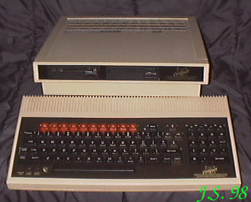

A C O R NZ produktów angielskiej firmy ACORN posiadam tylko jeden egzemplarz Master Compact. Komputery te sprzedawane by³y w specjalnych sklepach dla górników (by³y takie, by³y, ale nie pytajcie górników, bo z ¿alu mog± pobiæ ;o)) Procesor 65C12 / 2MHz.RAM 128kB (4 X 4464).ROM 64kB (27512) z mo¿liwo¶ci± rozszerzenia.Procesor graficzny (CRTC) 6845 (VD2069).Rozdzielczo¶æ maksymalna 640 X 256 w trybie monochrome.Grafika 16 - kolorowa przy rozdzielczo¶ci 160 X 256.Tryb tekstowy 80, 40 lub 20 kolumn; 32, 25 lub 24 linie.Wyj¶cie VIDEO MONOCHROME (CINCH) I RGB.Porty: CENTRONICS, FDD, Joystick. Opcja RS232 i ECONET.FDD 1 lub 2 x 720kB, kontroler WDC1772.D¼wiêk - Czterokana³owy generator SN76489, wzmacniacz LM386 i g³o¶nik wewnêtrzny. |